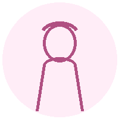
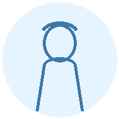
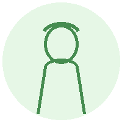

疲れにくい体で、毎日を楽しみたい
年齢や不調に振り回されず、日々を軽やかに過ごしたい方へ。
年齢や不調に振り回されず、日々を軽やかに過ごしたい方へ。
その場しのぎではなく、自分に合う整え方を持ちたい方へ。
心・体・食をまとめて見直し、続く習慣にしたい方へ。
「整える力」は、一生の財産になる
疲れやすい。イライラする。眠れない。やる気が出ない。年齢のせいだと思っていた不調も、実は生活習慣のバランスが関係していることがあります。
じぶん整え習慣サロンでは、6つの生活習慣を体質タイプに合わせて整えていきます。大切なのは、頑張ることではなく、「自分に合う整え方」を知ること。毎日の暮らしの中で続けられる小さな整え習慣を身につけることで、心も体も、少しずつ軽く、ラクになっていきます。
心・体・食をバランスよく整えながら、"無理なく続く"健康習慣をつくります。
がんばらなくても整う心と体の「じぶん整え習慣」。

「食事だけ、運動だけではなく、その人に合ったトータルバランスで考えることが大事だとわかりました。ガチガチに食事制限していた私が、自分に合った方法で無理なく続けられています。」
T.Fさん・38歳・主婦

「万人に合う健康法ではなく、タイプ別に個人に寄り添った健康法は初めてでした。学んだことを毎日継続していると、身体の調子が違います。短時間でさっとできるのも助かっています。」
M.Kさん・53歳・主婦

「自分のための健康法を色々な角度からシンプルに教えてもらえるので取り入れやすかったです。健康は食だけでなく生活習慣すべてが関係することがわかり、生活習慣に対する考え方が変わりました。」
M.Hさん・55歳・薬膳カウンセラー
診断や相談から、自分に合う整え方を確認できます。